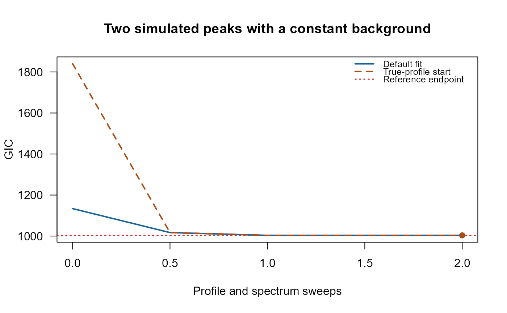

The second fit starts from unit-area profiles on the observed scan grid. A least concave majorant of log height gives a feasible starting shape when irregular acquisition or bin integration alters log-concavity. Both fits estimate spectra, amplitudes, shapes and background from the same data. The block traces include the public GIC at each checkpoint. With a different selection penalty, its decrease need not imply a GIC decrease.
Arguments
- object
A logconNMF or GCMSprime fit computed with
truth.profiles.- x
The returned diagnostic.
- type
Show both panels, the complete GIC trace, or the final half of each trajectory on a percentage scale relative to the reference endpoint. The dotted red line marks the final GIC of the truth-initialised fit (zero on the difference scale).
- ...
Other arguments passed to the base plot.
Value
A plottable object with the standard and reference GIC, their signed
difference, percent = 100 * difference / abs(reference_gic), both
block traces and elapsed seconds for reference initialization and fitting.
A zero reference GIC gives an undefined percentage. A negative difference
means the standard fit reached a lower GIC. Both fits use the same stopping
rules. Further updates could improve either fit. The global minimum is unknown.
On the small 16-sample benchmark, the default fit achieved an empirical
optimality gap of 0.45% relative to the fit initialised with the true
elution profiles and cross-sample compound identities. After 100 additional
profile and spectrum sweeps from both endpoints, the gap was 0.15%.
An independently fitted GCMSprime directory returns a named list of these
diagnostics, one per sample.
Examples
# One sample with two Gaussian peaks and a constant background in every ion.
t <- seq_len(80)
H <- cbind(exp(-((t - 25) / 5)^2), exp(-((t - 53) / 4)^2))
S <- rbind(c(100, 30, 0), c(0, 20, 80))
Y <- round(2 + H %*% S)
X <- convMatrix(convKernel("gaussian", 15L, list(sigma = 2)), length(t))
# Estimate an ion-specific background level in both fits.
B <- matrix(1, nrow = length(t), ncol = 1L)
fit <- logconNMF(Y, X, time = t, background = B, truth.profiles = H,
ncores = 1L, correlation = "none")
gap <- gicGap(fit)
round(c(default = gap$fitted_gic, truth_initialised = gap$reference_gic), 3)
#> default truth_initialised
#> 1003.461 1003.461
plot(gap, type = "GIC", main = "Two simulated peaks with a constant background")
